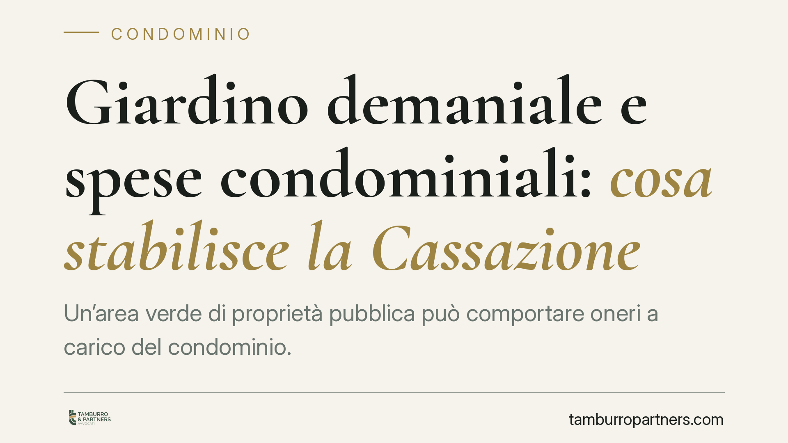

Giardino demaniale e spese condominiali: cosa stabilisce la Cassazione
Un'area verde di proprietà pubblica può comportare oneri a carico del condominio. La Corte di Cassazione ha chiarito che i condòmini devono concorrere alle spese del giardino demaniale quando questo contribuisce al decoro architettonico dell'edificio. Il criterio di riparto resta quello millesimale dell'art. 1123 c.c. Una pronuncia che incide sui bilanci condominiali e sulle delibere assembleari.

Il caso
La questione riguarda un'area verde di proprietà demaniale — cioè appartenente al Comune o ad altro ente locale — collocata in adiacenza a un edificio condominiale. Il punto controverso: i condòmini devono partecipare alle spese di manutenzione di un giardino che, formalmente, non è di loro proprietà?
La Corte di Cassazione ha risposto in modo articolato. La proprietà pubblica del suolo non esclude, di per sé, l'obbligo contributivo dei condòmini. Ciò che conta è la funzione concreta che quell'area svolge rispetto all'edificio.
Inquadramento normativo
Il riferimento è l'art. 1123 del Codice civile, che disciplina la ripartizione delle spese condominiali. Il primo comma fissa la regola generale: le spese per la conservazione e il godimento delle parti comuni si dividono tra i condòmini in proporzione al valore della proprietà di ciascuno, espresso in millesimi.
Il secondo comma introduce un criterio diverso — il riparto in base all'uso — per le cose destinate a servire i condòmini in misura differente. Ma quando un bene contribuisce al decoro architettonico dell'intero fabbricato, l'utilità è comune e indivisibile: torna applicabile il criterio millesimale.
La Cassazione valorizza proprio questo profilo. Il giardino demaniale, pur non essendo parte comune in senso proprietario, può essere funzionalmente collegato all'edificio. Se la sua presenza accresce il pregio estetico e il valore dell'immobile, l'onere manutentivo che ricade sul condominio segue le regole ordinarie di riparto.
Il criterio del decoro architettonico
Il decoro architettonico è l'estetica complessiva del fabbricato, l'armonia delle linee e degli elementi che ne determinano l'identità e il valore. La giurisprudenza lo tratela come bene giuridicamente rilevante e tutelabile.
Nel ragionamento della Corte, se l'area verde demaniale è parte integrante di questo assetto estetico — ad esempio perché progettata insieme all'edificio o perché ne costituisce la cornice visiva — la spesa connessa alla sua cura non è un'elargizione a favore del Comune, ma un costo che attiene al godimento e alla conservazione del bene condominiale.
Non ogni area verde pubblica vicina al palazzo genera quindi un obbligo. Serve un collegamento concreto e dimostrabile con il decoro dell'edificio. È una valutazione di fatto, da accertare caso per caso.
Implicazioni pratiche
Per l'amministratore e per i singoli condòmini la pronuncia ha conseguenze tangibili.
Prima conseguenza: una delibera che approva spese per un giardino demaniale non è automaticamente illegittima per il solo fatto che il suolo sia pubblico. La sua validità dipende dal nesso funzionale con il decoro dell'edificio.
Seconda conseguenza: il condòmino dissenziente non può limitarsi a invocare la proprietà pubblica dell'area per sottrarsi al pagamento. Dovrà contestare, nel merito, l'assenza di quel collegamento estetico-funzionale.
Terza conseguenza: il riparto avviene in millesimi. Chi possiede una quota maggiore paga di più, indipendentemente dall'uso personale che fa del giardino.
Resta ferma la necessità di un titolo o di un accordo con l'ente pubblico che legittimi l'intervento del condominio sull'area demaniale. La spesa deve avere una base giuridica, non può essere un'iniziativa unilaterale priva di copertura.
Cosa fare in concreto
- Verificate il titolo: prima di deliberare spese su aree demaniali, accertate l'esistenza di convenzioni, concessioni o accordi con il Comune che autorizzino l'intervento condominiale.
- Documentate il nesso con il decoro: raccogliete elementi (progetti originari, perizie, documentazione fotografica) che dimostrino il collegamento tra l'area verde e l'estetica dell'edificio.
- Applicate il riparto millesimale: per spese legate al decoro, utilizzate i millesimi di proprietà ex art. 1123, primo comma, salvo diversa convenzione.
- Motivate la delibera: l'assemblea deve indicare le ragioni che giustificano l'onere, per ridurre il rischio di impugnazioni.
- Valutate l'impugnazione nei termini: il condòmino che contesta la spesa deve agire entro trenta giorni dalla delibera, articolando contestazioni di merito e non solo formali.
La materia richiede un esame puntuale della situazione specifica: la qualificazione del bene e l'esistenza del nesso funzionale non si presumono, ma vanno provate.
---
*Contributo informativo a cura di Tamburro & Partners - Avv. Giuseppe Tamburro. Non costituisce parere legale.*
Ogni condominio ha una storia a sé.
Se gestisci un'amministrazione e vuoi un confronto su una specifica questione condominiale, scrivi allo studio. Ti rispondiamo entro un giorno lavorativo.